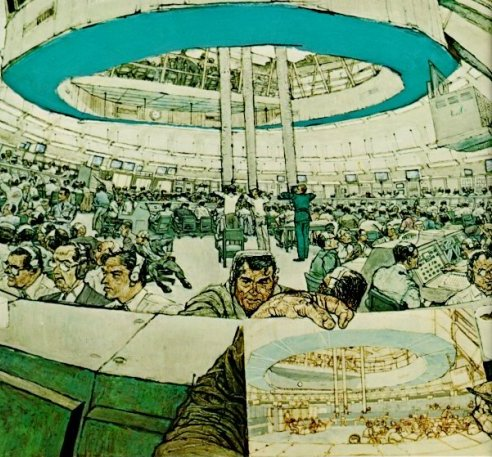

Gagarin's successful one-orbit flight in Vostok in April 1961 changed Presidential
caution into concern and resulted in the Apollo decision.
A thoughtful scholar, Dr. John Logsdon, has described the situation in these
words:
Paul Calle,
GEMINI SPACECRAFT AND GANTRY,
pencil on paper
"The Soviet Union was quick to capitalize on the propaganda significance of the
Gagarin flight. In his first telephone conversation with Gagarin, Nikita Khrushchev
boasted, 'Let the capitalist countries catch up with our country.' The Communist Party
claimed that in this achievement 'are embodied the genius of the Soviet people and the
powerful force of socialism.' . . . Soviet propaganda stressed three themes:
The Gagarin flight was evidence of the virtues of 'victorious socialism';
the flight was evidence of the global superiority of the Soviet Union in
all aspects of science and technology;
the Soviet Union, despite the ability to translate this superiority into
powerful military weapons, wants world peace and general disarmament."
"New York Times correspondent Harry Schwartz suggested that it appeared likely
'that the Soviet leaders hope their space feat can further alter the atmosphere of
international relations so as to create more pressure on Western governments to make
concessions on the great world issues of the present day.' "
Logsdon also wrote: ". . . the events of April produced a time of crisis, a time in
which a sense of urgency motivated space planners and government policymakers to
reexamine our national space goals and space programs. This reexamination resulted
in a presidential decision to use the United States space program as an instrument of
national strategy, rather than to view it primarily as a program of scientific research.
This decision identified, for the world to see, a space achievement as a national goal
symbolic of American determination to remain the leading power in the world."
1

Fred Freeman, SATURN BLOCKHOUSE, acrylic on canvas
There were, of course, many other elements of national policy and commitment,
but it is not easy to relate them to any one event such as the Gagarin flight. Continued
Congressional understanding and support was the product of years of work by
outstanding legislative leaders, and by devoted committee members and staffs. Cooperation
and participation by Department of Defense elements and leaders were essential and
are shown throughout this volume.